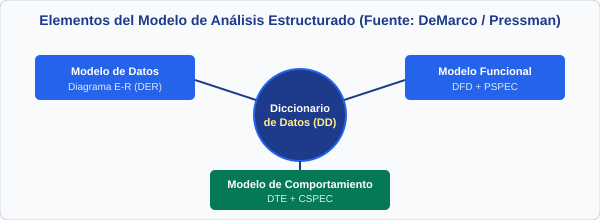

UNIDAD II. ANÁLISIS Y MODELADO DE REQUISITOS
Estudio completo de las 5 tareas del análisis de requisitos, técnicas de obtención (entrevistas, FAST, QFD, casos de uso), los 5 principios operativos de Davis, estudio de viabilidad, descomposición funcional, modelado de datos (DER y normalización 1FN–3FN), modelado funcional (DFD por niveles, equilibrio y PSPEC), modelado del comportamiento (DTE y CSPEC), Diccionario de Datos y norma IEEE Std 830 / ISO 29148.
2.1 Análisis de requisitos y principios del análisis
El análisis de requisitos del software es el puente técnico entre la ingeniería de sistemas (donde se asigna el papel del software) y el diseño del software. Permite al ingeniero especificar la función y el rendimiento del software, indicar la interfaz con otros elementos del sistema y establecer las restricciones que debe cumplir.
Las Cinco Áreas de Esfuerzo (Tareas) del Análisis de Requisitos
- 1. Reconocimiento del problema: Estudiar la especificación del sistema y el plan del proyecto para comprender el ámbito del software en el contexto del negocio y las necesidades de los interesados.
- 2. Evaluación y síntesis: Definir todos los objetos de datos observables externamente, evaluar el flujo y contenido de la información, definir y elaborar todas las funciones del software, comprender el comportamiento del sistema en el contexto de los sucesos que afectan su operación, establecer las características de la interfaz y descubrir las restricciones adicionales del diseño.
- 3. Modelado: Construir modelos gráficos y textuales (de datos, funcionales y de comportamiento) para comprender mejor el flujo de datos y el control antes de especificar.
- 4. Especificación: Redactar formalmente el documento de Especificación de Requisitos de Software (ERS / SRS).
- 5. Revisión: Evaluar junto con el cliente y mediante una Revisión Técnica Formal (RTF) que los requisitos sean completos, consistentes y verificables.
Técnicas de Obtención de Requisitos (Comunicación con el Cliente)
Durante la comunicación inicial suelen presentarse tres obstáculos clásicos: problemas de ámbito (la frontera del sistema está mal definida), problemas de comprensión (los usuarios no tienen completamente claro qué necesitan o omiten conocimiento que dan por obvio) y problemas de volatilidad (los requisitos cambian con el tiempo). Para superarlos se aplican cuatro técnicas:
- Entrevistas libres de contexto: Comienzan con preguntas de alto nivel independientes del dominio técnico: ¿Quién solicita este trabajo?, ¿Quién utilizará la solución?, ¿Cuál será el beneficio económico de una buena solución?, ¿Qué problemas resuelve y qué datos de salida visibles necesita el usuario?
- Técnicas Facilitadas de Especificación de Aplicaciones (FAST): Reuniones conjuntas estructuradas en un lugar neutral entre desarrolladores y clientes donde se elaboran listas consensuadas de objetos del entorno, servicios (funciones) que operan sobre esos objetos y restricciones, además de criterios de validación.
- Despliegue de la Función de Calidad (QFD — Quality Function Deployment): Técnica de gestión de calidad que traduce las necesidades del cliente en requisitos técnicos del software, clasificándolos en tres categorías:
- Requisitos normales: Los objetivos y funciones que el cliente declara explícitamente durante las reuniones (si están presentes, el cliente queda satisfecho).
- Requisitos esperados: Son tan fundamentales e implícitos que el cliente ni siquiera los menciona (por ejemplo, que el sistema no borre datos al presionar Enter o que sea fácil de instalar); su ausencia causa profunda insatisfacción.
- Requisitos estimulantes (emocionantes): Características que van más allá de las expectativas del cliente y resultan muy satisfactorias cuando están presentes (por ejemplo, autocompletado inteligente o exportación instantánea a Excel/PDF).
- Casos de Uso (Ivar Jacobson): Descripciones narrativas de escenarios que detallan cómo un actor (un rol específico de usuario o dispositivo externo) interactúa paso a paso con el software para lograr un objetivo concreto.
Los Cinco Principios Operativos del Análisis (Alan Davis)
Todos los métodos de análisis estructurado y orientado a objetos comparten cinco principios operativos fundamentales:
- Debe representarse y comprenderse el dominio de la información de un problema: Incluye los datos que fluyen hacia adentro del sistema (usuarios, sensores, otros sistemas), los datos que fluyen hacia afuera y los almacenes de datos (bases de datos o archivos) que conservan la información permanentemente.
- Deben definirse las funciones que debe realizar el software: El software transforma información realizando cálculos, comparaciones, validaciones y formateos.
- Debe representarse el comportamiento del software (como consecuencia de acontecimientos externos): La mayoría del software responde a eventos del entorno (presionar un botón, vencimiento de un temporizador, lectura de un sensor).
- Deben dividirse en forma jerárquica los modelos que representan información, función y comportamiento: La partición (divide y vencerás) reduce la complejidad al ir de una visión global hacia niveles de detalle cada vez más específicos.
- El proceso de análisis debe ir desde la información esencial hasta el detalle de la implementación: La vista esencial describe qué logra el sistema sin atarse a tecnologías específicas; la vista de implementación refleja cómo se llevará a cabo físicamente.
Video Explicativo del Tema 2.1
Fuente del video: Ingeniería de Software / Requisitos — https://www.youtube.com/watch?v=Hedi-Qobgbc
2.2 Identificación del problema, ámbito y descomposición del software
La primera actividad tanto del análisis como de la planificación de un proyecto de software es la determinación del ámbito del software. Sin un ámbito acotado e inequívoco es imposible realizar estimaciones ni diseñar una arquitectura coherente.
Componentes que Definen el Ámbito del Software
- 1. Contexto: ¿Cómo encaja el software a construir dentro de un sistema mayor, producto o contexto de negocio, y qué restricciones le impone dicho contexto?
- 2. Objetivos de información: ¿Qué objetos de datos visibles para el cliente se producen como salida del software y qué objetos de datos son necesarios como entrada?
- 3. Función y rendimiento: ¿Qué funciones realizará el software para transformar los datos de entrada en datos de salida, y qué características especiales de rendimiento (velocidad de respuesta, capacidad de procesamiento, memoria o fiabilidad) deben cumplirse?
El Estudio de Viabilidad (Cuatro Dimensiones)
Una vez delimitado el ámbito inicial, antes de comprometer recursos humanos y financieros se realiza un estudio de viabilidad que responde cuatro preguntas críticas:
| Dimensión de Viabilidad | Pregunta que Evalúa | Ejemplo de Análisis en un Proyecto |
|---|---|---|
| 1. Viabilidad Técnica | ¿Se puede construir el sistema con la tecnología, herramientas y conocimientos actuales? | Verificar si el lector láser industrial es compatible con la API de .NET MAUI en Android. |
| 2. Viabilidad Económica | ¿El beneficio económico o ahorro operativo supera el costo total de desarrollo y mantenimiento? | Comparar el costo del desarrollo contra el ahorro anual por reducción de desperdicio de material. |
| 3. Viabilidad de Calendario | ¿Es realista entregar el sistema funcional antes de la fecha límite requerida por el negocio? | Evaluar si las 4 unidades o módulos pueden completarse dentro de las 16 semanas del semestre. |
| 4. Viabilidad Legal / Operativa | ¿Cumple con normativas legales/licencias y será aceptado por los usuarios finales en su operación? | Cumplir la Ley de Protección de Datos Personales y usar licencias válidas o software libre. |
Descomposición del Problema (Partición o Elaboración)
La descomposición del problema —también denominada partición o elaboración— es una actividad que se sienta en el núcleo del análisis de requisitos. Su propósito es dividir un problema complejo de gran escala en subproblemas o subfunciones más pequeñas que sean más fáciles de comprender, especificar y estimar individualmente. La descomposición se aplica en dos ejes simultáneos: (1) las funciones y datos que deben entregarse, y (2) las actividades del proceso que se emplearán para construir cada función.
Video Explicativo del Tema 2.2
Fuente del video: Universitat Politècnica de València (UPV) — https://www.youtube.com/watch?v=wJtTp1UNAwM
2.3 Elementos del modelo de análisis: Modelado de datos, funcional y del comportamiento
El modelo de análisis estructurado (propuesto por Tom DeMarco, Gane y Sarson, Edward Yourdon, y ampliado por Ward y Mellor para sistemas de tiempo real) tiene al Diccionario de Datos en el núcleo central y tres modelos concéntricos que representan las tres dimensiones del software:
| Dimensión del Modelo | Pregunta que Responde | Diagrama Principal | Especificación Complementaria |
|---|---|---|---|
| 1. Modelo de Datos | ¿Qué información maneja y almacena el software? | Diagrama Entidad-Relación (DER) | Diccionario de Datos (atributos y llaves) |
| 2. Modelo Funcional | ¿Qué transformaciones aplica sobre los datos? | Diagrama de Flujo de Datos (DFD) | Especificación de Procesos (PSPEC) |
| 3. Modelo de Comportamiento | ¿Cómo reacciona el sistema ante eventos externos? | Diagrama de Transición de Estados (DTE) | Especificación de Control (CSPEC) |
1. Modelado de Datos (Diagrama Entidad-Relación — DER y Normalización)
El modelo de datos propuesto por Peter Chen define tres elementos esenciales:
- Objetos de datos (Entidades): Representación de casi cualquier información compuesta (con varias propiedades diferentes) que el software debe entender: entidades externas, cosas (un reporte, un vehículo), sucesos (una venta, una llamada), roles (alumno, docente, operador), unidades organizativas (departamento, turno), lugares (almacén, sucursal) o estructuras (archivo, tabla).
- Atributos: Definen las propiedades de un objeto de datos y cumplen una de tres funciones: (1) nombrar una ocurrencia del objeto, (2) describir la instancia, o (3) hacer referencia a otra instancia en otra tabla (llave foránea). Uno o más atributos se definen como identificador (clave primaria).
- Relaciones (Cardinalidad y Modalidad): Conectan los objetos de datos entre sí:
- Cardinalidad (1:1, 1:N, M:N): Especifica el número máximo de ocurrencias de un objeto que se relacionan con una ocurrencia de otro (Uno a uno 1:1 como Empleado–CajónAsignado; Uno a muchos 1:N como Cliente–Pedidos; Muchos a muchos M:N como Pedido–Productos, la cual siempre se resuelve creando una entidad asociativa intermedia como
DetallePedido). - Modalidad (0 o 1): Vale 1 (obligatoria) si una ocurrencia de la relación es indispensable (un pedido no puede existir sin un cliente), y vale 0 (opcional) si puede no existir (un cliente recién registrado puede tener cero pedidos).
- Cardinalidad (1:1, 1:N, M:N): Especifica el número máximo de ocurrencias de un objeto que se relacionan con una ocurrencia de otro (Uno a uno 1:1 como Empleado–CajónAsignado; Uno a muchos 1:N como Cliente–Pedidos; Muchos a muchos M:N como Pedido–Productos, la cual siempre se resuelve creando una entidad asociativa intermedia como
Las 3 Formas Normales (Normalización de Codd): (1) 1FN: Todos los atributos son atómicos (sin grupos repetitivos ni listas en una misma celda); (2) 2FN: Está en 1FN y todo atributo no clave depende funcionalmente de la clave primaria completa (sin dependencias parciales); (3) 3FN: Está en 2FN y ningún atributo no clave depende transitivamente de otro atributo no clave.
2. Modelado Funcional y Flujo de Información (DFD y PSPEC)
El Diagrama de Flujo de Datos (DFD) muestra cómo la información entra al sistema, se transforma a través de una serie de procesos y sale convertida en resultados. Utiliza cuatro símbolos gráficos:
| Elemento del DFD | Símbolo Gráfico | Regla de Nomenclatura | Función en el Modelo |
|---|---|---|---|
| Proceso (Transformador) | Círculo o burbuja (Yourdon) / Rectángulo redondeado (Gane-Sarson) | Verbo activo + Objeto (ej. «Validar pedido», «Calcular salario neto») | Transforma flujos de datos de entrada en flujos de salida. |
| Flujo de Datos | Flecha con dirección | Sustantivo singular (ej. «datos_empleado», «factura_emitida») | Tubería por la que viajan paquetes de información conocida. |
| Almacén de Datos | Dos líneas horizontales paralelas | Sustantivo en plural (ej. «D1: Clientes», «D2: Inventario») | Repositorio pasivo de datos que son leídos o actualizados por procesos. |
| Entidad Externa | Rectángulo o cuadrado | Sustantivo / Rol (ej. «Cliente», «Banco», «Sensor») | Productor o consumidor de información que reside fuera de los límites del software. |
Refinamiento por niveles y Regla del Equilibrio: El DFD de Nivel 0 (Diagrama de Contexto) representa todo el sistema como una única burbuja central conectada con las entidades externas. Luego esa burbuja se descompone en el Nivel 1 (de 3 a 7 procesos principales), y cada burbuja compleja se refina en un Nivel 2 (numerados 1.1, 1.2, 1.3...). La Regla del Equilibrio (Balanceo) exige que todos los flujos de datos que entran y salen de una burbuja padre aparezcan exactamente iguales entrando y saliendo del diagrama hijo refinado. Deben evitarse errores comunes como «procesos milagro» (salidas sin ninguna entrada) o «agujeros negros» (entradas sin ninguna salida). Cada burbuja primitiva (que ya no se subdivide) se documenta mediante una Especificación de Proceso (PSPEC) en pseudocódigo, narrativa o tabla de decisión.
3. Modelado del Comportamiento (DTE y CSPEC)
El Diagrama de Transición de Estados (DTE) representa el comportamiento dinámico del sistema a lo largo del tiempo modelando:
- Estados (rectángulos o círculos): Modos observables de comportamiento en los que el sistema espera algún suceso (ej. en un Cajero Automático: En Espera, Validando PIN, Mostrando Menú, Dispensando Efectivo, Tarjeta Retenida).
- Eventos y Acciones (flechas de transición): Cada flecha que conecta dos estados se etiqueta con el formato
Evento que ocurre [Condición] / Acción que ejecuta el sistema(por ejemplo:PIN incorrecto [intentos == 3] / Bloquear cuenta y retener tarjeta). - Especificación de Control (CSPEC): Incluye el DTE y la Tabla de Activación de Procesos (PAT), que indica qué procesos del DFD se habilitan o deshabilitan cuando el sistema entra en determinado estado.

Figura 2.1: Estructura del modelo de análisis estructurado. Fuente: DeMarco, T. (1979) y Pressman, R. S. (2010).
Video Explicativo del Tema 2.3
Fuente del video: Modelado de Sistemas Estructurados — https://www.youtube.com/watch?v=o1duC8IOKBs
2.4 Técnicas de análisis estructurado y documentación de requisitos (DD y ERS IEEE 830)
1. El Diccionario de Datos (DD)
El Diccionario de Datos es un listado organizado de todos los elementos de datos pertinentes al sistema, con definiciones precisas y rigurosas para que tanto el usuario como el analista tengan una comprensión común de todas las entradas, salidas, componentes de almacenes y cálculos intermedios. Cada entrada del diccionario registra: Nombre del elemento, Alias (sinónimos), Dónde y cómo se usa (qué procesos del DFD lo leen o escriben), Descripción de su contenido (usando notación algebraica) e Información suplementaria (valores por defecto, rangos permitidos, longitud y tipo de dato).
| Constructo de Datos | Símbolo en el Diccionario | Significado Formal |
|---|---|---|
| Definición | = | «Está compuesto de» o «es equivalente a». |
| Secuencia (Concatenación) | + | «Y» (un elemento seguido de otro elemento). |
| Selección (Decisión) | [ | ] | «O» (elegir exactamente una de las opciones encerradas entre corchetes). |
| Repetición (Iteración) | 1{ ... }n | El elemento entre llaves se repite desde un límite inferior (1) hasta un límite superior (n). |
| Dato Opcional | ( ... ) | El dato encerrado entre paréntesis puede estar presente o ausente. |
| Comentario | * ... * | Nota aclaratoria sobre restricciones o formato del dato. |
Validación cruzada del modelo: Todo almacén del DFD debe corresponder a una entidad o agrupación del DER, y todo flujo y atributo debe estar declarado en el Diccionario de Datos.
2. La Especificación de Requisitos de Software (ERS / SRS según IEEE Std 830 e ISO/IEC/IEEE 29148)
La Especificación de Requisitos de Software (ERS) es el documento oficial que se produce al concluir el análisis. Según el estándar IEEE Std 830, una buena ERS debe cumplir 7 cualidades indispensables:
- Correcta: Todo requisito incluido representa algo que realmente se requiere del sistema a construir.
- No ambigua: Cada requisito tiene una única interpretación posible para cualquier lector.
- Completa: Incluye todos los requisitos significativos (funcionales, rendimiento, interfaces y respuestas ante entradas válidas e inválidas).
- Consistente: Ningún subconjunto de requisitos entra en contradicción lógica o terminológica con otro.
- Clasificada por importancia y estabilidad: Identifica cuáles requisitos son esenciales, condicionales u opcionales.
- Verificable: Existe un proceso finito y económico (una prueba o demostración cuantitativa) para comprobar que el software cumple el requisito (evitar frases vagas como «el sistema será amigable»).
- Modificable y Trazable: Su estructura permite realizar cambios controlados y cada requisito tiene un identificador único (
RF-01,RNF-01) que permite rastrear su origen y vincularlo con los módulos de diseño y casos de prueba.
Estructura Estándar de un Documento ERS (Esquema IEEE 830 / Pressman)
- Capítulo 1. Introducción: Propósito del documento, ámbito del producto, definiciones/acrónimos, referencias y visión general.
- Capítulo 2. Descripción General (y de la Información): Perspectiva del producto, funciones generales, características de los usuarios, restricciones, diagramas de contexto, modelo de datos (DER) y diccionario de datos.
- Capítulo 3. Requisitos Específicos (Funcionales, de Interfaz y Comportamiento): Especificación detallada de cada función con entradas, procesamiento y salidas (DFD, PSPEC), interfaces externas (usuario, hardware, software, comunicaciones), comportamiento (DTE) y atributos de calidad (seguridad, disponibilidad, mantenibilidad).
- Capítulo 4. Criterios de Validación y Aceptación: Límites de rendimiento, clases de pruebas exigidas y condiciones bajo las cuales el cliente dará por aceptado el sistema.
- Capítulo 5. Bibliografía y Apéndices.
Video Explicativo del Tema 2.4
Fuente del video: Documentación de Software ERS — https://www.youtube.com/watch?v=ZUVDkSXRt5I
Autoevaluación Interactiva de la Unidad II
Responde las siguientes 5 preguntas sobre Análisis y Modelado de Requisitos: